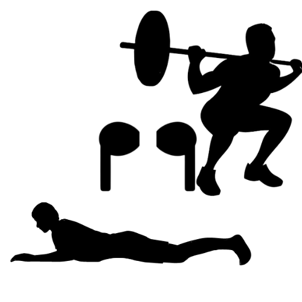
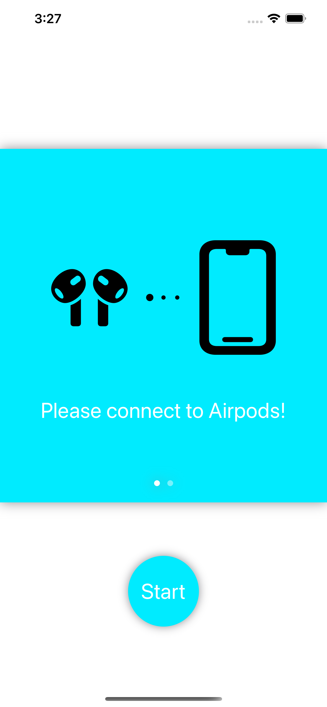
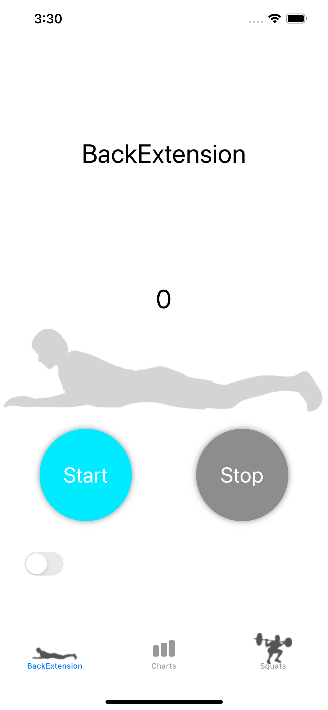
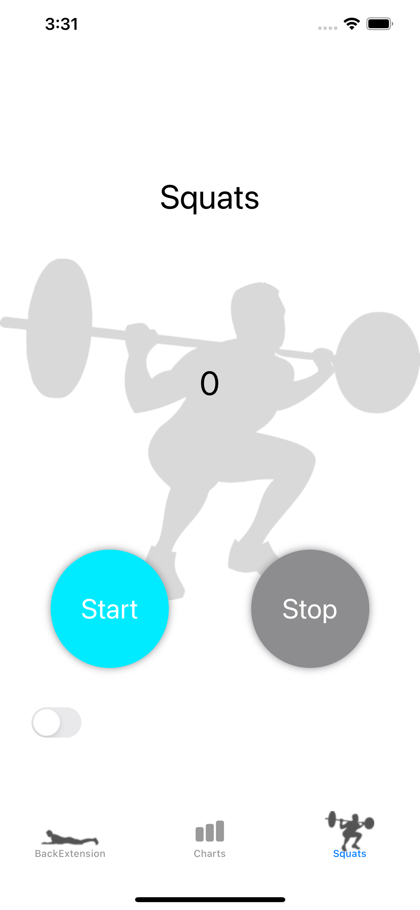
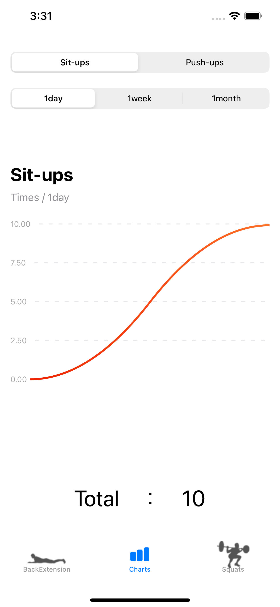
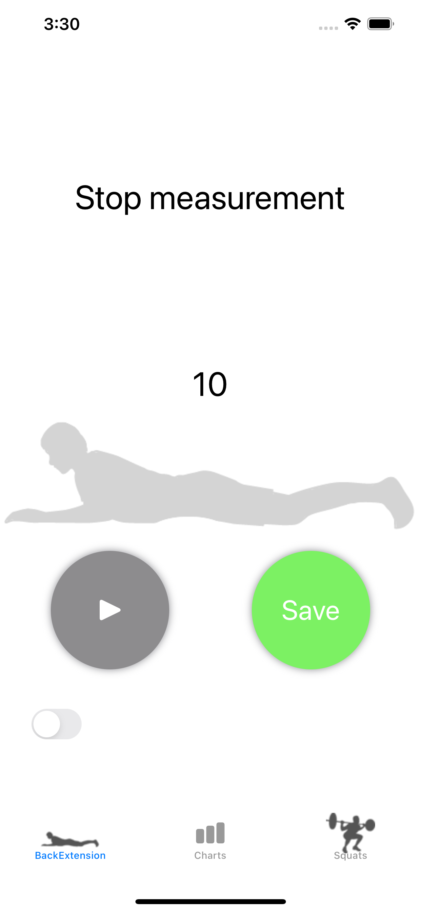
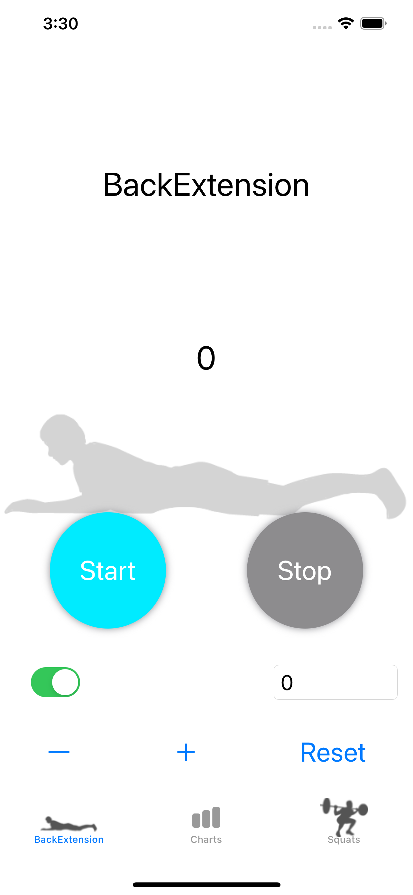

Muscle training counter2
Airpodsをつけることで背筋,スクワットを
自動でカウントしてくれます。
Airpodsが接続されていることを確認してください。
Startを押すと計測が開始され,
背筋,スクワットを行うとカウントされます。
Airpodsがない場合でも手動で入力も可能。
Saveを押すと回数が保存され,
日ごと,週ごと,月ごとにグラフ化されます。






何か不明な点がございましたらお問い合わせください。 e-mail:kanbe5631@gmail.com